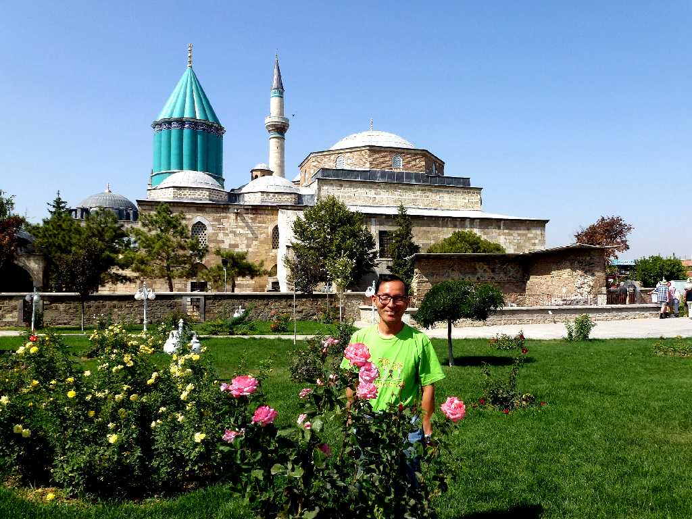
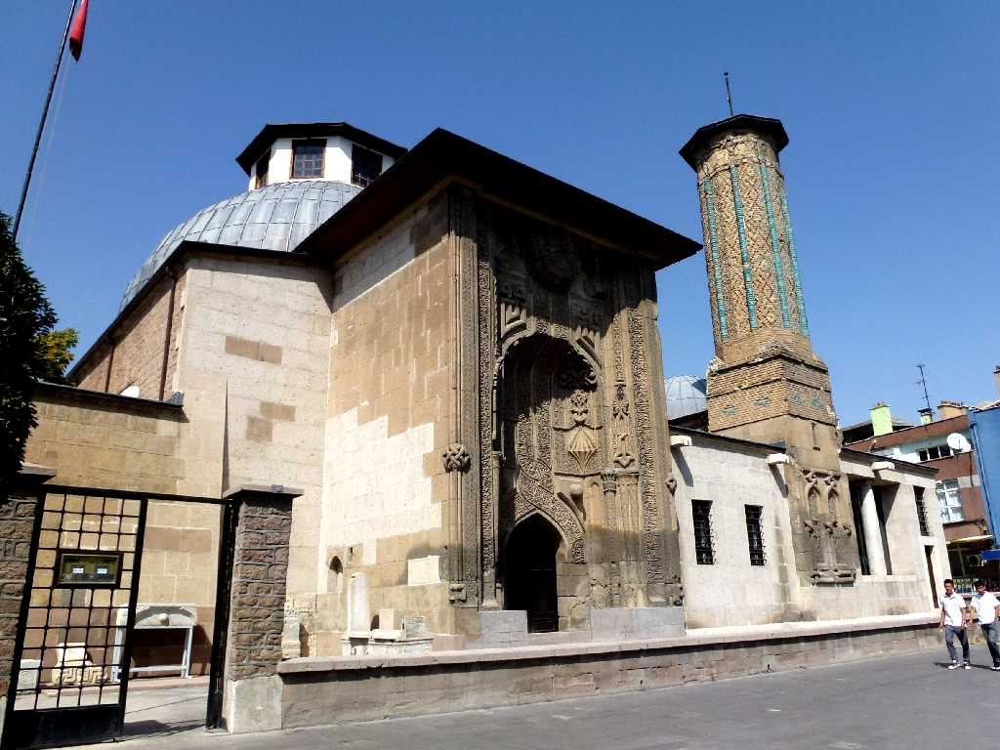

Mevlana Türbesi Konya
紀元前７世紀のリディア王国時代には都市となりパウロのキリスト教布教地として知られ１１世紀にはイスラム教徒の支配下に入り１３世紀にルームセルジューク朝の中心都市として繁栄した 多くのモスクが建ち並ぶアナトリア地方の宗教都市

September 21 2011 Mevlana Türbesi
イスラム神秘主義で有名なメブラーナ教団のモスクで１３世紀からの墓がある

İnce Minareli Medrese Konya
１３世紀に創られたインジェミナーレ神学校